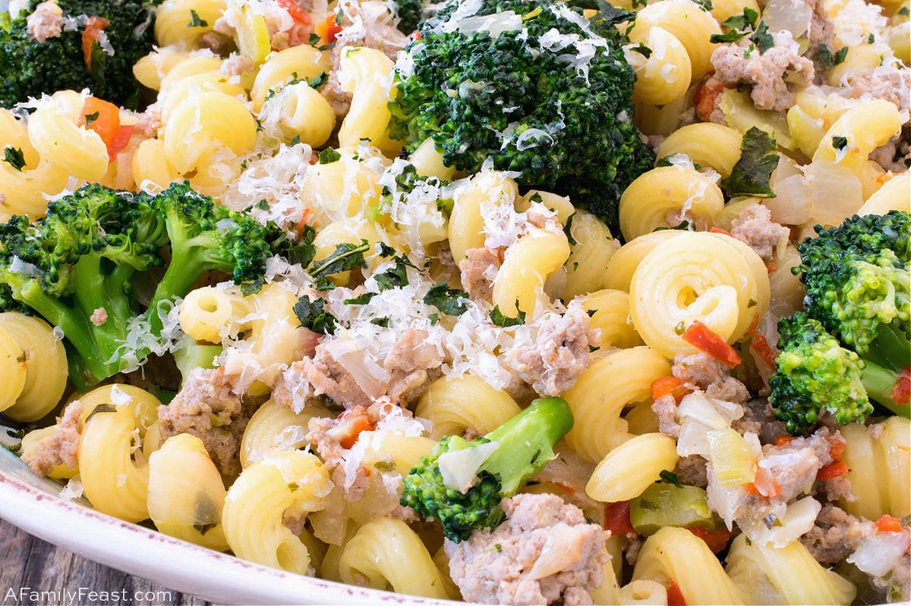

Turkey and Broccoli Recipe

Description
To round out the three main meats I consumed during my time as a college student living in an apartment, we'll end with another variant: ground turkey with broccoli.
Depending on the lean to fat ratio of the ground turkey, this can result in a drier and less flavorful dish overall. Salt, pepper, and garlic powder are still good seasonings, and kewpie mayo and hot sauce are still good condiments. You may want to add some scrambled eggs or sauces for flavor and texture variety.
Ingredients
- 300 grams ground turkey
- 100 grams broccoli
- olive or vegetable oil
- seasonings to taste
Steps
- In a small pot, boil enough water to submerge all of the broccoli.
- While the water is boiling, wash the broccoli and season the ground turkey generously with your chosen seasonings.
- Pour a small amount of oil into a medium pan and wait for it to heat.
- Place the seasoned turkey into the pan, pressing it into a large patty shape and flipping occasionally.
- Once the water is boiling, boil or steam the broccoli for 5 minutes.
- Check the turkey for doneness. Once both main ingredients are finished, take off the heat and serve with your chosen condiments. Optionally, serve with pasta.